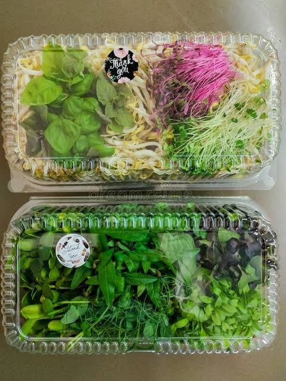

Bismi Microgreen form is located in Perambalur
Owner - Tharabegam
we are delivering a fresh and healthy micro green products at your door steps with free of cost
Concentrated Nutrient Density
- Higher Vitamin Levels: Research published via Healthline and studies from institutions like the University of Maryland show that microgreens can contain anywhere from 4 to 40 times more nutrients (such as vitamins C, E, K, and beta-carotene) per gram than their mature plant counterparts.
- Rich Mineral Content: They are strong sources of essential minerals including potassium, iron, zinc, magnesium, and copper.
- Antioxidants & Polyphenols: They contain high levels of beneficial plant compounds and phenolic antioxidants that protect cells from oxidative stress and free radical damage.
- Heart Health: Microgreens—particularly varieties like red cabbage—are rich in polyphenols linked to a lower risk of cardiovascular disease. Animal studies suggest they can help lower triglyceride and "bad" LDL cholesterol levels.
Key Health Benefits
- Blood Sugar Regulation: Certain varieties like fenugreek microgreens have been shown in preliminary studies to significantly improve cellular glucose uptake, aiding in blood sugar management.
- Cancer-Fighting Potential: Cruciferous microgreens (like broccoli) contain very high concentrations of sulforaphane, a potent compound studied for its anti-inflammatory and cellular-protective properties.
- Digestive and Immune Support: Packed with dietary fiber and immunity-boosting vitamins, they help nourish beneficial gut bacteria and support overall metabolic health
